par christoph
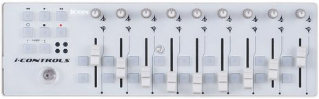
iControls est une petite surface de contrôle basée sur la logique de la Korg NanoKontrol version 1.
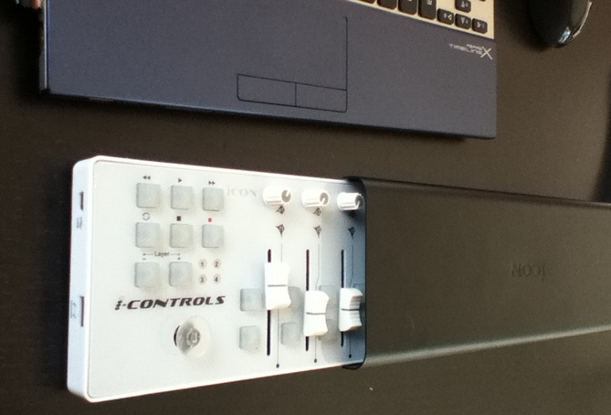
Les iCons ont déboulé sur le marché français en septembre 2011. J'étais personnellement dans l'expectative, pensant à un made in China de seconde zone.
iControls se révèle être une surface de contrôle stable, solide et de bonne facture. Korg ayant décidé d'économiser en matériaux sur la version 2 des NanoKontrol, iControls se retrouve du coup un cran au dessus en qualité, et pour le même prix que l'interface dont elle s'était largement inspirée ! Sortie de la boîte, l'iControls est opérationnelle sur les 4 pages, sans besoin d'édition. Cependant, il peut arriver qu'un preset soit mal chargé en usine: la commande n'envoie pas d'infos. Auquel cas il faut éditer la page.
L'iControls propose:
L'iControls possède une partie dite Transport:
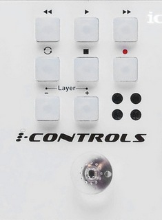
L'iControls permet une gestion des faders dans WhiteCat de manière très agréable, notamment grâce aux rotatifs, qui peuvent servir pour les LFOs, et aux deux touches assignées à chaque tranche, que l'utilisateur pourra attribuer à son gré ( mise en boucle, flash, up ou down, ect…).
La course est suffisante pour les crossfades et m' a fait retrouver le plaisir des transferts en manuel ( beaucoup plus agréable que l'uc33).
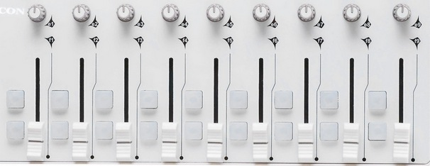
Il faut d'abord que votre interface soit branchée, et que les drivers soient installés.
Vous ne pouvez pas éditer l'interface alors que WhiteCat est ouvert et communique avec l'iControls: c'est la règle des ports USB, un seul logiciel à la fois peut se brancher sur un périphérique.
L'iControls est vendue avec un petit logiciel, iMap, plutôt fonctionnel. Il n'est cependant pas forcément évident au premier abord, notamment sur le fait qu'il faille se connecter à l'iControls par la touche MidiDevices pour uploader une config.
Ce petit logiciel couvre toutes les surfaces de controle iCON.
Au démarrage de iMap, sélectionnez l'iControls.
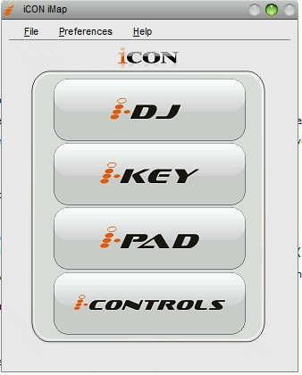
L'interface affiche alors une copie conforme de l'iCONtrols:
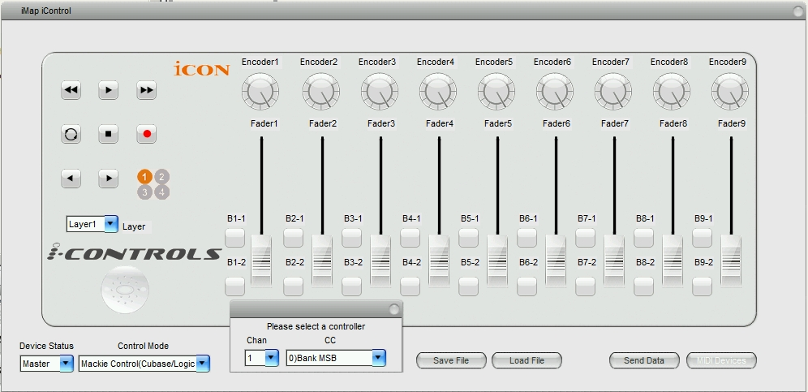
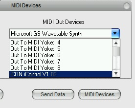
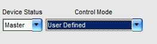
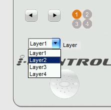
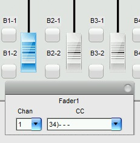
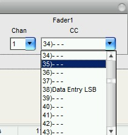
Attention, il est important de noter que même les boutons sont édités en CC, et non pas en Key On ou Key Off. Vous devrez utiliser l'option KeyOff=Vel 0 de WhiteCat pour obtenir des comportements corrects pour les déclenchements.
Contrairement à l'AKAI LPD8, vous ne pouvez pas récupérer la configuration du matériel depuis le périphérique: vous êtes obligés d'avoir le fichier de sauvegarde iMap pour modifier les commandes de votre périphérique. Ou alors il faut tout ré éditer.
Pour éviter les rééditions intempestives, sauvez votre configuration !
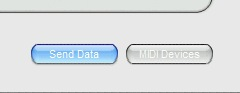